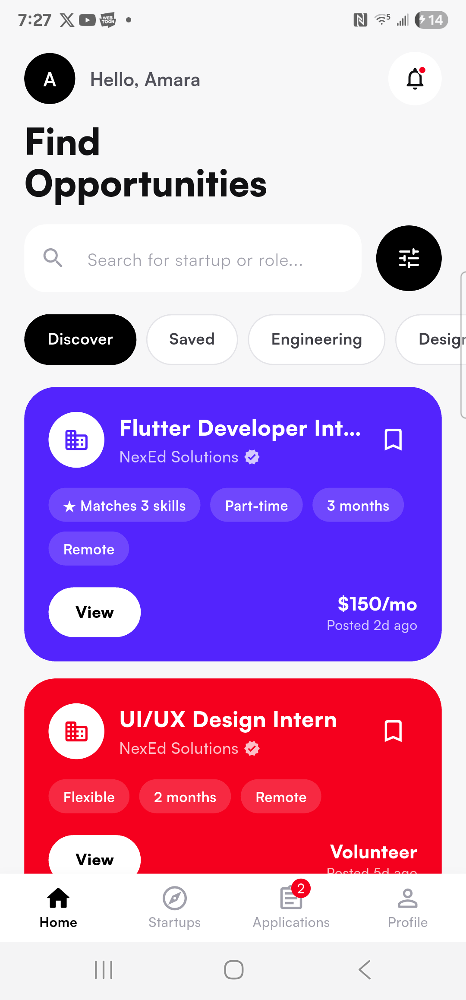
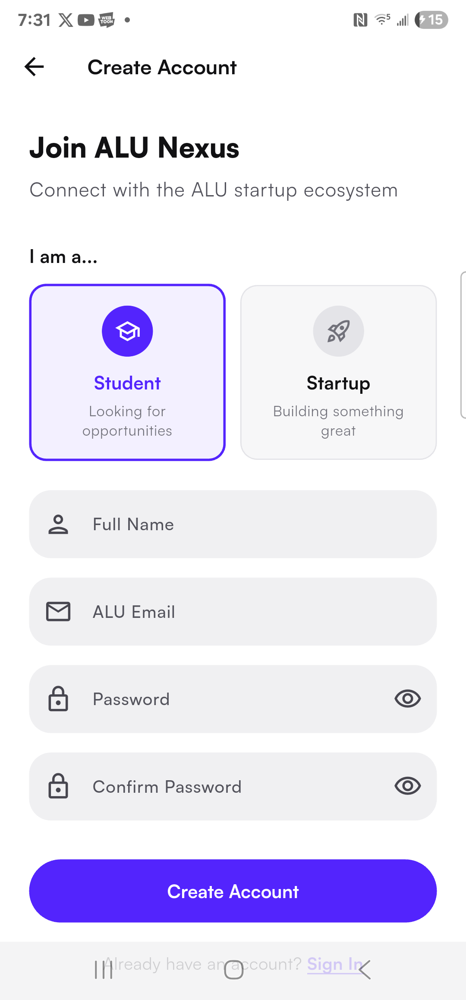
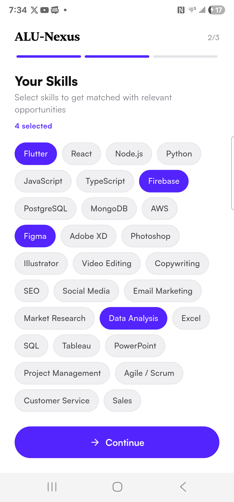
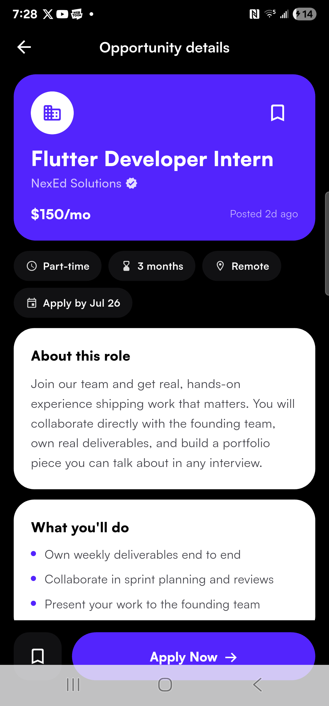
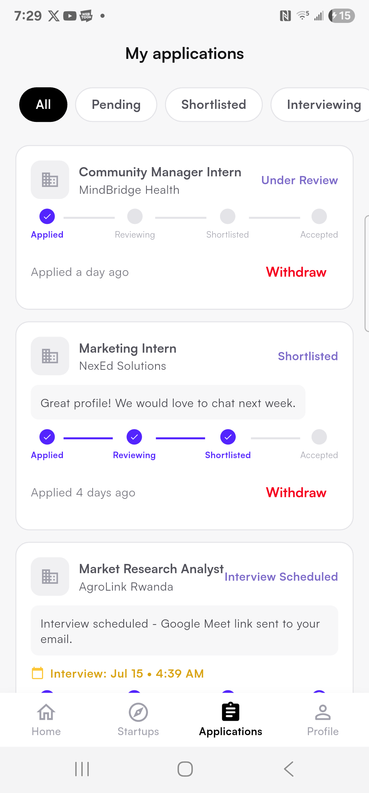
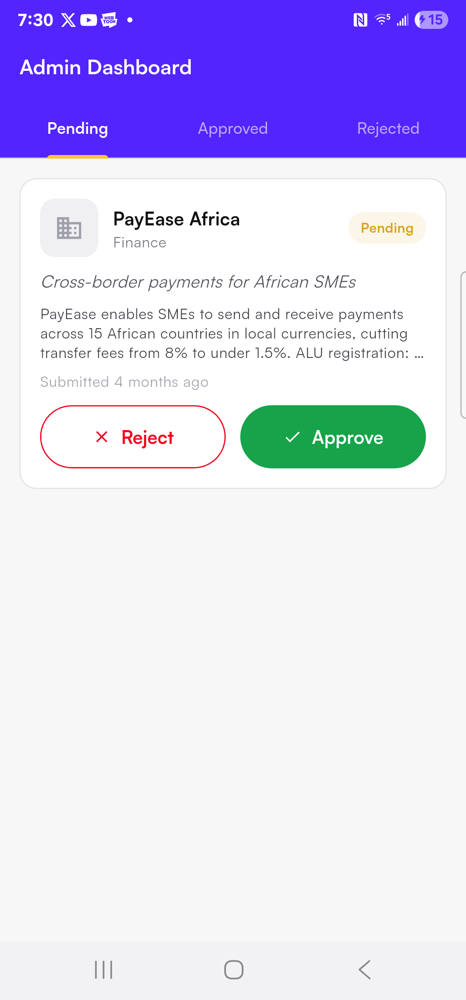
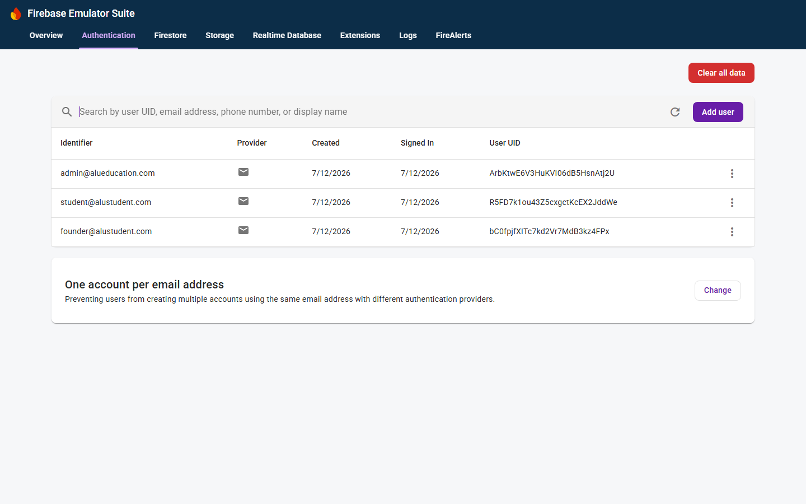
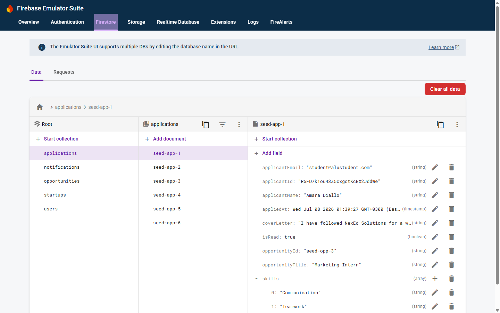

A Flutter + Firebase marketplace connecting ALU students with student-led startups
ALU students need practical experience before graduation; ALU's student-led startups need affordable, motivated talent. Today this matching happens informally — WhatsApp groups, word of mouth, hallway conversations. Postings get lost, applications go unanswered with no record, and students have no way to verify that a "startup" recruiting them is legitimate. The consequences are asymmetric: a student who sends work samples to a fake venture loses more than the venture does.
ALU Nexus is designed around three product decisions that address the ALU context specifically, not a generic job board:
startupVerified == true
server-side, so unverified content is excluded at the data layer — it cannot reach students even by bug.Fig. 1 — Layered architecture. Writes flow downward through repositories; Firestore snapshot streams flow upward into Cubit state. The dashed demo repositories substitute the data layer without touching any other layer.
Each feature (auth, onboarding, opportunities, applications, startups, notifications, admin) owns three layers under its own folder: domain (plain entities, zero Firebase imports [1]), data (models extending the entities with Firestore serialization, plus repositories that own every Auth/Firestore call), and presentation (Cubits and screens). Screens never construct queries or touch Firebase directly.
The decisive evidence that these seams are real is the app's three run modes, switched by two
compile-time flags in main.dart:
| Mode | Flags | Backend |
|---|---|---|
| Demo | kDemoMode = true | In-memory subclass repositories; no Firebase initialization at all |
| Emulator | kDemoMode = false, kUseEmulators = true | Real Firebase SDKs against the Local Emulator Suite (Auth :9099, Firestore :8080) |
| Production | kDemoMode = false, kUseEmulators = false | Live Firebase project via flutterfire configure |
All three modes run the identical UI, routing, and state layer. Demo repositories subclass the
production repositories and override only their I/O methods — possible because repositories expose Firebase
through lazy getters (FirebaseAuth get _auth => FirebaseAuth.instance;) rather than
constructor-time captures (§11, Challenge 1).
Fig. 2 — The unidirectional real-time loop. The UI reacts to the backend echoing the write back through the snapshot stream, never to the local call — so every open screen (and the Firebase console) converges on the same state without polling or manual refresh.
Every list screen subscribes to a Firestore snapshots() stream inside its Cubit. When a
startup advances an application's status, the student's tracker pipeline, the startup's applicant list, the
profile statistics row, and the backend console all update from the same commit. Cubits own their
StreamSubscriptions and cancel them in close(); changing a filter cancels the old
subscription and opens a new server-side-filtered query.
GoRouter is created once at startup with a refreshListenable bound to
AuthCubit's stream. A single declarative redirect enforces the whole access
policy: unauthenticated → /login; authenticated but not onboarded → the role-specific
onboarding flow; onboarded → the role-specific home (student / startup / admin shells). Because
the guard runs on every navigation, no deep link can reach a protected screen — protection is a property of
the router, not a per-screen check. (An earlier version recreated the router on each auth state change,
which reset navigation mid-login; §11, Challenge 6.)
The brief allows BLoC, Riverpod, Provider, Cubit, or another justified architecture. Cubit (from the bloc package [2]) was selected deliberately:
| Option | Assessment for this app |
|---|---|
| Cubit (chosen) | Direct methods (search(), submitApplication()) map 1:1 to user intents; sealed state classes make loading/error handling exhaustive; first-class Flutter bindings (BlocBuilder/BlocListener). |
| Full BLoC (events) | Event objects add auditability useful for event-sourced or highly concurrent flows — ceremony without benefit at this interaction complexity. |
| Provider | ChangeNotifier offers no state-machine shape; loading/error handling becomes ad-hoc flags. Used deliberately for one thing (bookmarks, below). |
| Riverpod | Powerful, but a larger conceptual surface for a single-developer codebase; bloc's explicit Cubit-per-feature convention reads better for evaluators too. |
| Cubit | Owns | Backend link |
|---|---|---|
AuthCubit | session, onboarding completion | authStateChanges stream |
OpportunityCubit | feed + active filters (search/type/commitment/paid) | Firestore snapshots() |
ApplicationCubit | application lists for both roles; submit/update/withdraw | Firestore snapshots() |
StartupCubit | directory, detail, verification actions | Firestore snapshots() |
NotificationCubit | notification list + unread count | Firestore snapshots() |
A deliberate exception: bookmarks use a ChangeNotifier singleton
(BookmarkStore) persisted to SharedPreferences. Bookmarks are device-local
personalization — a Set<String> of opportunity IDs. A Cubit + Firestore round-trip would
add latency and cost for zero user value at this scale; choosing the lighter tool where appropriate is part
of the architecture argument, not a departure from it.
| Collection | Key fields | Notes |
|---|---|---|
users/{uid} | email, displayName, role (student|startup|admin), skills[], isOnboardingComplete, createdAt | Document ID = Auth UID. skills[] drives feed ranking. |
startups/{id} | ownerId, name, tagline, description, industry, verificationStatus (pending|approved|rejected), stage, focusAreas[], opportunitiesCount, followersCount | Verification status is the publishing gate. |
opportunities/{id} | startupId, startupName, startupVerified (denormalized), title, type, skills[], commitment, duration, isPaid, compensation, location, deadline, isActive, applicationCount, viewCount, responsibilities[], requirements[], perks | Feed query: isActive == true && startupVerified == true, ordered by createdAt desc. |
applications/{id} | opportunityId, opportunityTitle, startupId, startupName (denorm.), applicantId, applicantName, applicantEmail (denorm.), coverLetter, status, statusNote, interviewDate, appliedAt | Soft-deletes: withdraw sets status: withdrawn, preserving the audit trail. |
notifications/{id} | userId, title, body, type, referenceId, isRead, createdAt | Fan-out per recipient; unread count computed client-side from the stream. |
admin_actions/{id} | adminId, targetId, action, note, timestamp | Immutable audit log of verification decisions. |
Opportunities embed startupName/startupVerified; applications embed display fields from both
sides. Firestore charges and adds latency per document read, and offers no server-side joins [3] — so list
screens must render from a single query. The trade-off is write-time duplication (a startup rename would fan
out via a Cloud Function trigger), accepted because reads outnumber renames by orders of magnitude. This is
a standard NoSQL read-optimization pattern applied consciously, not schema laziness.
Access control is version-controlled (firestore.rules) and deployed with the app rather than
clicked together in a console: users write only their own document; a startup document is mutable only by
its owner or an admin; opportunities are creatable only by the owning startup's owner; an application is
readable only by its applicant and the receiving startup's owner; admin_actions is admin-only.
One deliberate carve-out allows any signed-in client to update only the
viewCount/applicationCount counters, enforced with
request.resource.data.diff(resource.data).affectedKeys().hasOnly([...]). The rules were verified
behaviorally: an authenticated write to another user's document is rejected with
PERMISSION_DENIED at the expected rule line. All 13 composite indexes required by the app's
compound queries are declared in firestore.indexes.json and deploy in one command — eliminating
an entire class of runtime "this query requires an index" failures.
Fig. 3 — Verification workflow. Only approved startups can publish, and
the feed filters verified content at the query level.
Duplicate submissions are blocked by a pre-submission query on
(applicantId, opportunityId). Each status change optionally carries a note and interview date;
the student sees a five-step progress visualization and may withdraw while the application is active.
Status changes generate notifications, and the startup's applicant list, the student's tracker, and the
profile statistics all converge through the snapshot loop of Fig. 2.
The feed computes a case-insensitive overlap score between the student's onboarding skills and each posting's required skills, ranks the list by score, and features the best match. The computation is O(n·m) client-side over the streamed page — appropriate at ALU's scale, with a documented server-side upgrade path (§10).

Fig. 4 — Discovery feed: greeting header, search + filter, pill tabs (Discover / Saved / categories), and color-blocked opportunity cards with skill-match tag, bookmark, and compensation.

Fig. 5 — Registration: role selection (student / startup) with ALU-email enforcement.

Fig. 6 — Onboarding skill selection; these choices drive the feed ranking in Fig. 4.

Fig. 7 — Opportunity detail: the feed card's color carries in as the identity block on a dark canvas; Save + Apply Now bottom bar.

Fig. 8 — Application tracker: pill filters and the five-step pipeline with status notes and a scheduled interview.

Fig. 9 — Admin verification dashboard: PayEase Africa pending review with approve/reject actions; decisions are audit-logged.
The interface went through three full design iterations — a navy/gold corporate look, a flat light-blue system, and the final bold color-blocked system — because the first two read as templates. The final system commits to a strong, recognizable visual language:
#5324FD,
red #F5001E,
yellow #FCC636,
black and white. Opportunity cards rotate through the three brand colors; each card's color follows the
user into its detail screen as the identity block, creating continuity. Text auto-inverts (white on
purple/red, black on yellow) for contrast.#7D6BC9, dot-separated) — one quiet voice for metadata instead of competing colored chips.
Color is reserved for surfaces and semantic states.Loading/Error states; screens render shimmer placeholders
or retryable error panels. Firebase Auth error codes map to human-readable messages
(email-already-in-use, wrong-password, too-many-requests, …).@alustudent.com /
@alueducation.com), password policy (length + uppercase + digit), 100-character minimum
cover letter, optional-but-validated URLs.flutter analyze is held at 0 issues; every
deprecation was migrated to current Material 3 APIs (withValues, initialValue,
activeThumbColor) rather than suppressed.PERMISSION_DENIED at the expected rule line). This validates code and security rules
together.tool/seed_emulator.sh)
reconstructs the entire demo world (accounts for all three roles, 4 startups incl. one pending
verification, 10 opportunities, 6 applications across pipeline stages, notifications) in seconds.
Fig. 10 — Firebase Authentication (Emulator Suite UI): the three role accounts provisioned by the seed script, as created through the real Auth API.

Fig. 11 — Cloud Firestore data browser: the applications collection with a
document showing the denormalized fields (applicant + opportunity display data embedded) described in §4.2.
These are documented in the order they occurred; each includes the diagnostic step that cracked it.
| Challenge | Diagnosis & resolution |
|---|---|
1. Firebase-coupled constructors crashed the app without a backend. Early repositories captured FirebaseAuth.instance at construction, throwing before the first frame on any device without Firebase configured. |
Refactored every repository to lazy getters (FirebaseAuth get _auth => FirebaseAuth.instance;) so Firebase is touched only when a method runs. Two lines per repository — and the enabling condition for the entire demo-mode architecture. |
2. Demo data vs. type safety. Screens resolve Cubits by concrete type (context.read<AuthCubit>()), so standalone demo cubits broke every screen. |
Demo cubits subclass the real ones and inject overridden repositories through the normal constructor — zero screen changes, and the substitution doubles as proof the layers are decoupled. |
| 3. Organization billing policy blocked Firestore provisioning. Creating a Firestore database failed with "This API method requires billing" on the university-managed Google Cloud organization — and on a personal project, via console and CLI, across regions and editions. | Isolated the variable systematically (org vs. personal project, console vs. API, region, edition) to prove it was account-level enforcement, not configuration. Pivoted to the Firebase Local Emulator Suite: same SDKs, same security rules, live data viewer — with production switchable later by one flag. Development never stalled. |
4. The physical-device networking gauntlet. On a real phone (not an AVD), login hung forever, then failed generically. Five distinct layers were broken at once: (a) Android blocks cleartext HTTP by default — and Firestore does not fail on it, it queues the write and retries silently forever, presenting as an infinite spinner; (b) the Firebase Flutter plugins silently rewrite localhost to 10.0.2.2, an alias that only exists inside Android emulators; (c) the dev machine's LAN IP then needed its own cleartext exemption; (d) the Java-based Firestore emulator bound to IPv6 only (:::8080) while the Node-based Auth emulator bound IPv4 — so half the backend was reachable; (e) a Windows Firewall Block rule for Android Studio's java.exe (created by a long-forgotten dismissed popup) overrode the port allow rule. |
Worked the stack layer by layer with real evidence at each step: device logs (adb logcat) exposed (a) and (b) verbatim; a scoped network_security_config.xml (cleartext to loopback + dev-machine IP only) fixed (a)/(c); a --dart-define=EMU_HOST build flag routed around (b); netstat bindings exposed (d), fixed with -Djava.net.preferIPv4Stack=true; and raw TCP probes from the phone (adb shell nc) — port 9099 connecting while 8080 timed out with identical rules — isolated (e) to a program-level firewall block. Each fix was verified independently before moving to the next layer. |
5. A silent data bug: invalid JSON escapes. The seed script wrote compensation strings as \$150/mo; \$ is an invalid JSON escape, so Firestore rejected every paid opportunity while unpaid ones succeeded — a partial, pattern-shaped data loss that looked like an app bug. |
Counted documents via the REST API and noticed the survivors were exactly the unpaid postings; correlated with INVALID_ARGUMENT: Payload isn't valid in the emulator log. Fixed the escaping and re-verified by document count. Lesson folded into the script: responses are no longer assumed successful. |
6. Router lifecycle reset navigation mid-login. The GoRouter instance was rebuilt inside a BlocBuilder on every auth state change, resetting the navigation stack while a login was in flight. |
Create the router once in initState; auth reactivity belongs to its refreshListenable, not to widget rebuilds. A one-line fix that encodes a real GoRouter lifecycle rule. |
7. Framework subtleties. Dart parsed '$150/month' as string interpolation; ListTile inside decorated containers threw ink-splash assertions. |
Raw strings (r'$150/month') for currency literals; Material(shape: …) wrappers instead of decorated Containers — which also unified how every card in the app is built. |
limit(50) on notifications). Client-side text search over the streamed page is appropriate
now; the drop-in replacement at scale is a search service (Algolia/Typesense) fed by Firestore triggers [3].getRecommendedOpportunities() built on Firestore's
arrayContainsAny, ready to be fronted by a Cloud Function ranking endpoint.startups keeps embedded
display fields consistent as write volume grows.[1] R. C. Martin, Clean Architecture: A Craftsman's Guide to Software Structure and Design. Boston, MA, USA: Prentice Hall, 2017.
[2] F. Angelov, "bloc state management library," bloclibrary.dev, 2024. [Online]. Available: https://bloclibrary.dev
[3] Google, "Cloud Firestore documentation — Data model, queries, and pricing," firebase.google.com, 2025. [Online]. Available: https://firebase.google.com/docs/firestore
[4] Google, "Firebase Authentication documentation," firebase.google.com, 2025. [Online]. Available: https://firebase.google.com/docs/auth
[5] Google, "Firebase Local Emulator Suite," firebase.google.com, 2025. [Online]. Available: https://firebase.google.com/docs/emulator-suite
[6] Flutter team, "Flutter documentation," docs.flutter.dev, 2025. [Online]. Available: https://docs.flutter.dev
[7] Android Developers, "Network security configuration," developer.android.com, 2025. [Online]. Available: https://developer.android.com/privacy-and-security/security-config